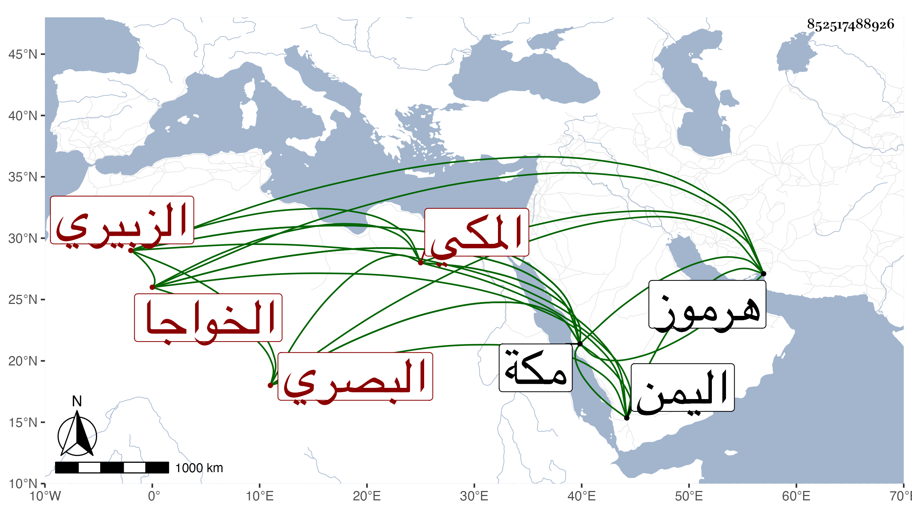

0902Sakhawi.DawLamic.ITO20230111-ara1.EIS1600.852517488926
Biography ID: 852517488926
873
عبد الكريم بن محمد بن محمد بن علي بن عبد الكريم بن يوسف الخواجا جلال الدين أو كريم الدين الزبيري نسبة للزبير بن العوام البصري ثم المكي ويعرف بدليم بدال مهملة ثم لام مصغرا وكذا بجلال . ممن سكن مكة وجدد بها دارا بل عمر أماكن كثيرة من عين حنين سنة ست وأربعين . وتردد إلى هرموز في التجارة ، ودخل اليمن ، وكان خيرا محسنا للفقراء والأرامل . مات بمكة في رجب سنة خمس وخمسين . أرخه ابن فهد
